AT A GLANCE: the five acts
The order this faction takes the galaxy in. Each act ends on a commander seat, and the seat is the only slide sequence every player of this faction sees in a fixed order.
| ACT | SYSTEM | GARRISON | SEAT | STORY BEAT | WHAT IT MEANS |
|---|
| 1 | THE EARTH SYSTEM | THE XENO | LUNA | The Morning After The Thirteenth | The fleet built to stop Apophis was never going to stand down. The Manifest begins where the harvest began: our own Moon. |
| 2 | THE PLEIADES | FEDERATION OF LIGHT | ALCYONE | The Unredacted | The occupation had human partners, and their names were not in the Disclosure. Someone chose what the whole truth left out. |
| 3 | ZETA RETICULI | THE XENO | SERPO | What The Herd Is Made Of | The modifications humanity resents are the same ones that make it competitive out here. The grievance and the gift are one object. |
| 4 | BARNARD'S STAR | THE PIRATES | HARBOUR NINE | The Liberation Invoice | Worlds humanity frees are becoming worlds humanity holds. Adaptation is not consent, and Earth is now on the other side of that sentence. |
| 5 | TABBY'S STAR | THE XENO | THE VEIL | Redline | To out-fight the galaxy, humanity is running the oppressor’s own machines past their safety line, and the line was there to protect what we are. |
THE PLANETARY PATH
Worlds unlock outward from the first of each system and the commander seat opens last, so this is the order the campaign is actually fought in, world by world, act by act.
ACT1
THE EARTH SYSTEM · held by THE XENO
MERCURY
›
VENUS
›
MARS
›
CERES
›
EUROPA
›
TITAN
›
★ LUNA
››THE DEPARTURE
ACT2
THE PLEIADES · held by FEDERATION OF LIGHT
MAIA
›
ELECTRA
›
TAYGETA
›
MEROPE
›
CELAENO
›
STEROPE
›
★ ALCYONE
››THE DISCLOSURE FILES
ACT3
ZETA RETICULI · held by THE XENO
ZETA-1 b
›
ZETA-1 c
›
ZETA-1 d
›
ZETA-2 b
›
ZETA-2 c
›
ZETA-2 d
›
★ SERPO
››THE FIVE SEATS
ACT4
BARNARD'S STAR · held by THE PIRATES
BARNARD b
›
BARNARD c
›
BARNARD d
›
BARNARD e
›
BARNARD f
›
BARNARD g
›
★ HARBOUR NINE
››THE HARVEST REVOLT
ACT5
TABBY'S STAR · held by THE XENO
KIC-8462 b
›
KIC-8462 c
›
KIC-8462 d
›
KIC-8462 e
›
KIC-8462 f
›
KIC-8462 g
›
★ THE VEIL
››THE MIRROR TRIAL
THE OATH (campaign start)
1. September 11, 2028. One broadcast: the rock is coming, and everything else they ever hid. The harvest. The edits. Where we really stood.
2. The panic burned out in weeks. What was left underneath frightened them more: people who wanted to fight.
3. Over one last holiday season, every nation conspired as one. Families gathered. The best minds alive built two things: the intercept, and the fleet.
4. April 13, 2029. A Friday. Apophis broke against everything we had. The rock is gravel. Nobody aboard wants to go home and wait for the next secret.
5. The fleet built to save one world is departing to claim the rest. First the Moon they watched us from. Then everything. THE MANIFEST BEGINS.
THE DEPARTURE · interstitial, straight after the oathMAR. WASHINGTON, The Marshal — “The Morning After The Thirteenth”
Eleven months ago they told us the date we would die, and everything else in the same breath. Today the rock is gravel, the fleet it paid for is fuelled, and nobody aboard wants to go home and wait for the next secret. Set course for Luna. They watched us from there for ten thousand years. We will start by knocking.
The fleet built to stop Apophis was never going to stand down. The Manifest begins where the harvest began: our own Moon.
ACT 1: THE EARTH SYSTEM garrisoned by THE XENO
Take back the solar system, world by world, from the power that farmed it. Every world is somewhere humanity already built: the mirror farm it half designed, the cloud city it flew, the trench it learned to survive in. It ends on the far side of the Moon, digging out the relay that watched Earth for ten thousand years. Everything before this was travel.
MERCURY
1. APPROACH
 pcut_00_human_1
pcut_00_human_1We built half of these mirrors. The other half went up to a specification nobody at the agency will admit to signing. Burn in.
2. THE GROUND
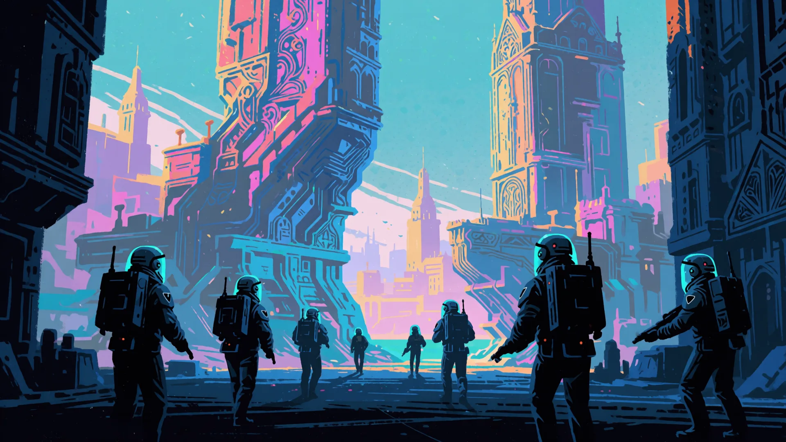
pcut_00_human_2The floor of Caloris, a shatter-ring the size of a continent, planted end to end with solar mirrors. Whoever holds the light here holds the power budget of the inner system.
3. THE ASSAULT
 pcut_00_human_3
pcut_00_human_3Every mirror tower on the basin floor is also a battery, and the sunshade walls were poured thick enough to stop something considerably larger than us.
4. AFTERMATH
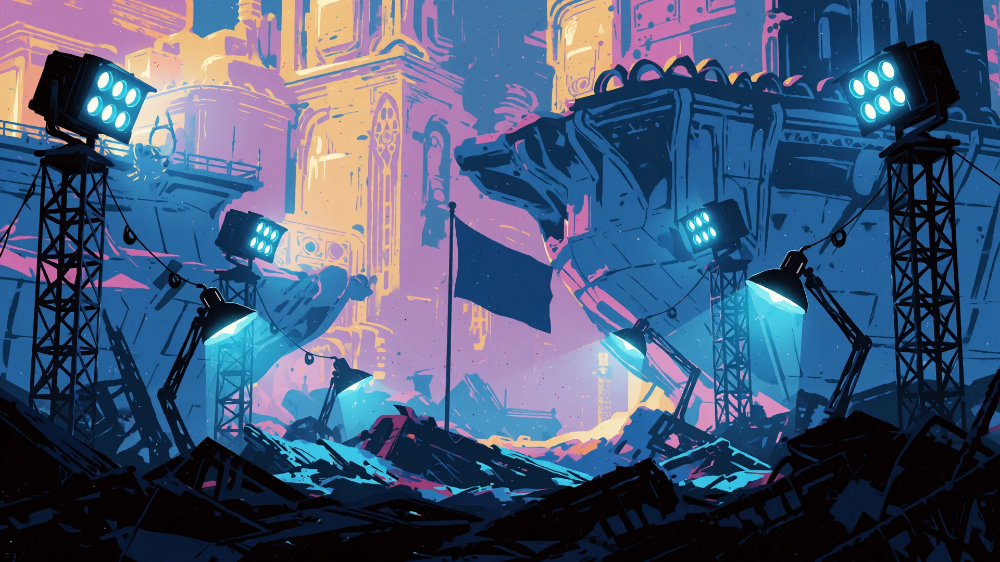
pcut_00_human_4Caloris is ours, terrace by terrace. The towers that were aimed away from the sun are aimed back at it.
5. NEW ORDER
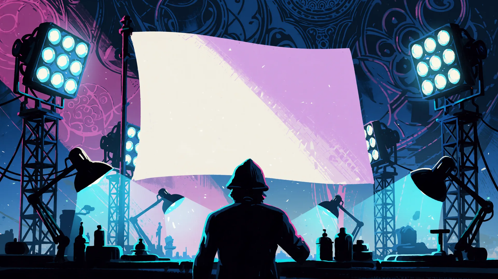
pcut_00_human_5The farm is relit and the grid answers to us. Somebody will eventually ask where the extra capacity came from. Nobody is asking this week.
VENUS
1. APPROACH
 pcut_01_human_1
pcut_01_human_1Fifty kilometres up is the only altitude on this planet where a person can live. Everyone who is about to fight us knows it too.
2. THE GROUND
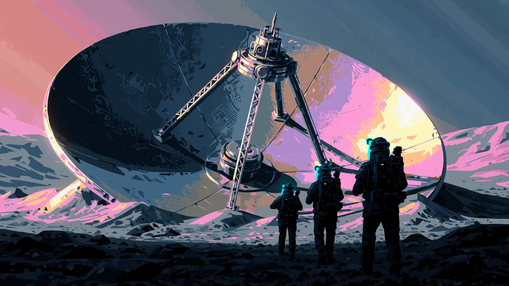
pcut_01_human_2A city of moored gasbags riding the one layer of this atmosphere that will not crush a hull, fifty kilometres above a surface nobody has stood on.
3. THE ASSAULT
 pcut_01_human_3
pcut_01_human_3Gun blisters set into the pressure hulls, and mooring towers eaten half through by acid. Everything here is one bad seam away from falling for an hour.
4. AFTERMATH
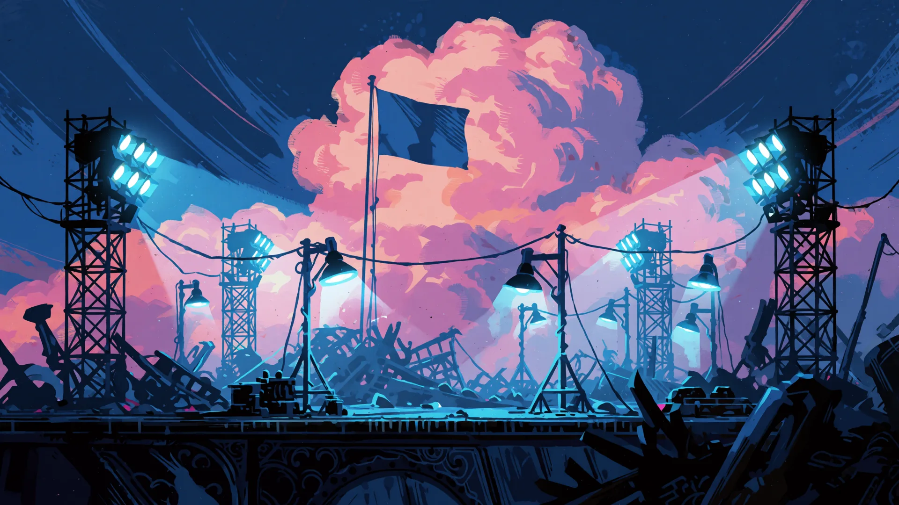
pcut_01_human_4The platforms are ours and most of them are still flying. We cut the moorings we had to and we are not pretending that was cheap.
5. NEW ORDER
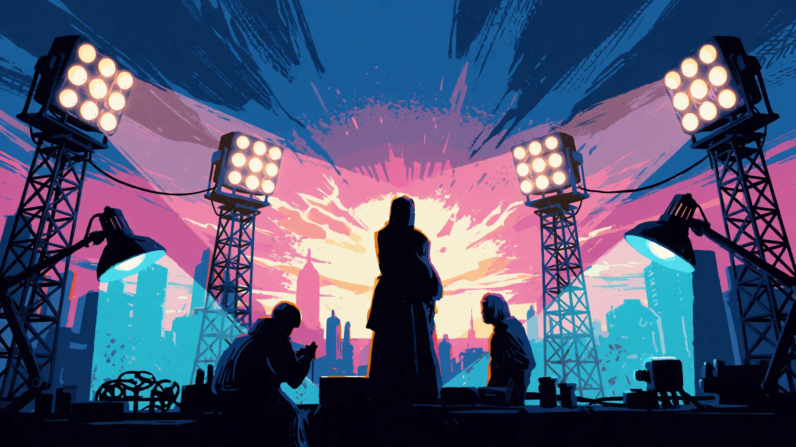
pcut_01_human_5Venus is re-moored and the haze traffic runs again. We are the third power to own this sky and the first to publish the tonnage.
MARS
1. APPROACH
 pcut_02_human_1
pcut_02_human_1Mars was the practice run. Everything we know about living somewhere that wants us dead, we learned in that trench.
2. THE GROUND
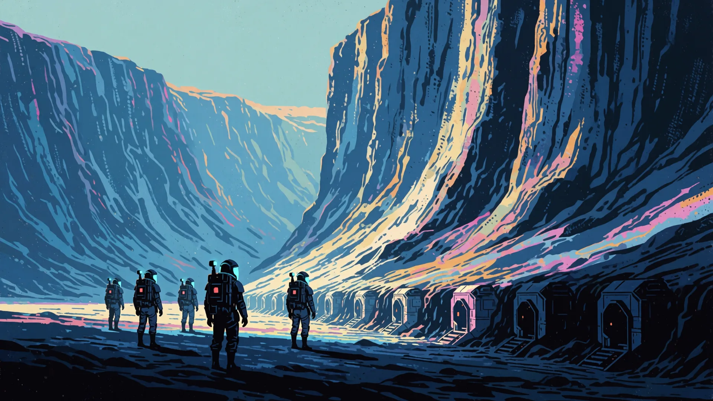
pcut_02_human_2A habitat trench dug along the floor of Valles Marineris, with four kilometres of cliff on either side and one dust storm a season that closes the sky.
3. THE ASSAULT
 pcut_02_human_3
pcut_02_human_3Gun galleries cut straight into the canyon walls, firing down. The trench was built to be defended by people who expected to be outnumbered.
4. AFTERMATH
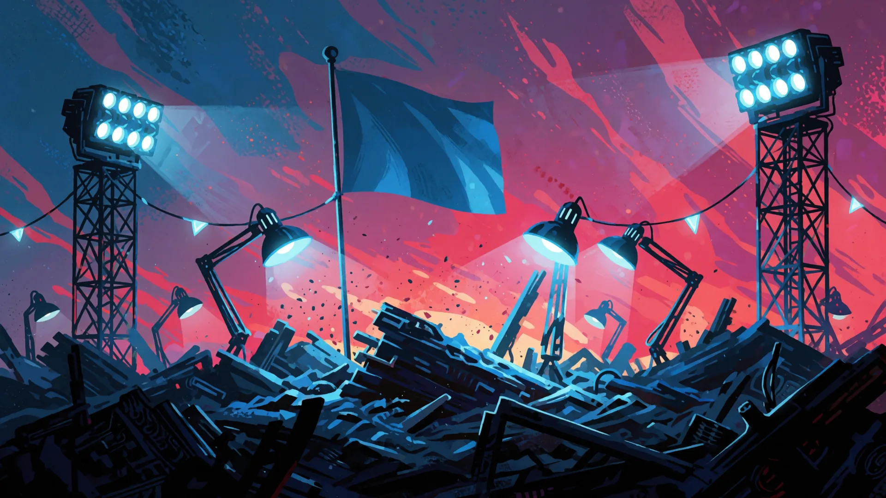
pcut_02_human_4The trench line held longer than the manual says it could, and it was ours by the second dust fall. We buried theirs beside ours. Same trench.
5. NEW ORDER
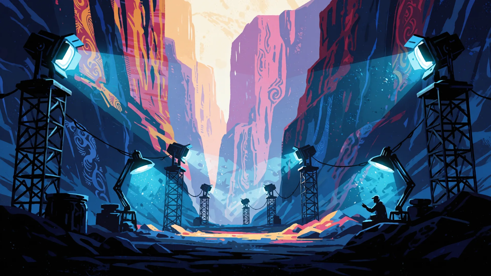
pcut_02_human_5Valles Marineris is lit end to end again. The oldest colony off Earth, and the first one we ever had to take back.
CERES
1. APPROACH
 pcut_03_human_1
pcut_03_human_1Water. Everything else out here is a preference. Ceres is where a fleet either drinks or turns around.
2. THE GROUND
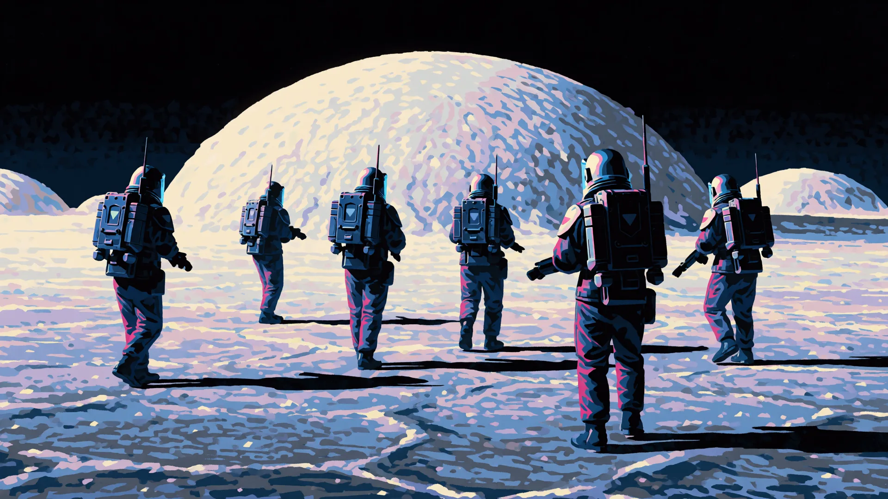
pcut_03_human_2The Occator salt flats, blinding white under a black sky, with mine heads sunk down through the evaporite into water ice older than the inner planets.
3. THE ASSAULT
 pcut_03_human_3
pcut_03_human_3Rail batteries that need almost no recoil mounting in this gravity, and ore cranes swung around and used as clubs. Improvised, and heavy.
4. AFTERMATH
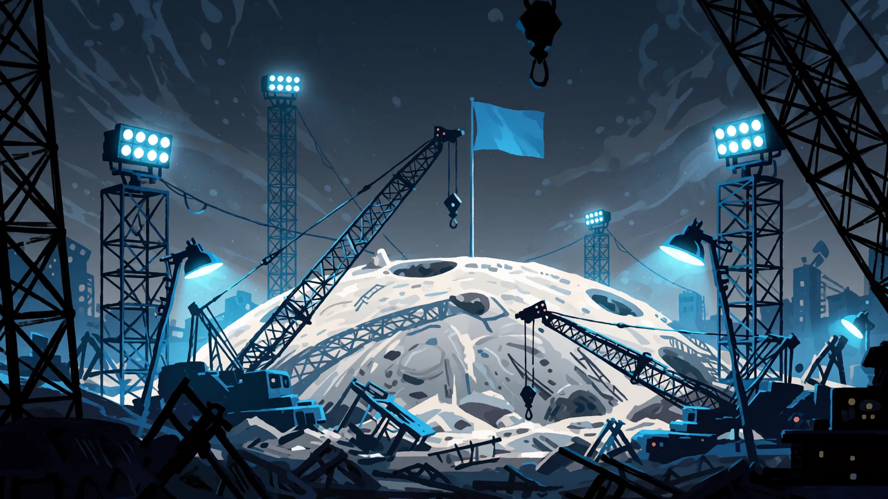
pcut_03_human_4The domes are cratered and the cranes are down, but the shafts are dry and intact, which was the entire reason we came.
5. NEW ORDER
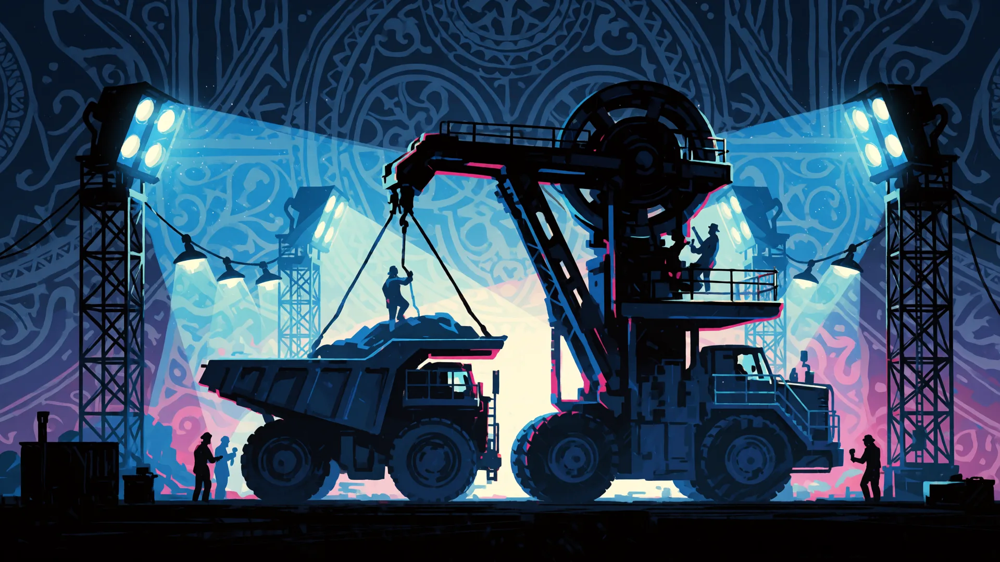
pcut_03_human_5Ceres is drawing again and the haulers are queued three deep. We are the ones holding the tap now. We should think about that.
EUROPA
1. APPROACH
 pcut_04_human_1
pcut_04_human_1There is an ocean under this ice and we have never once been allowed to look at it. Today the people saying no are in range.
2. THE GROUND
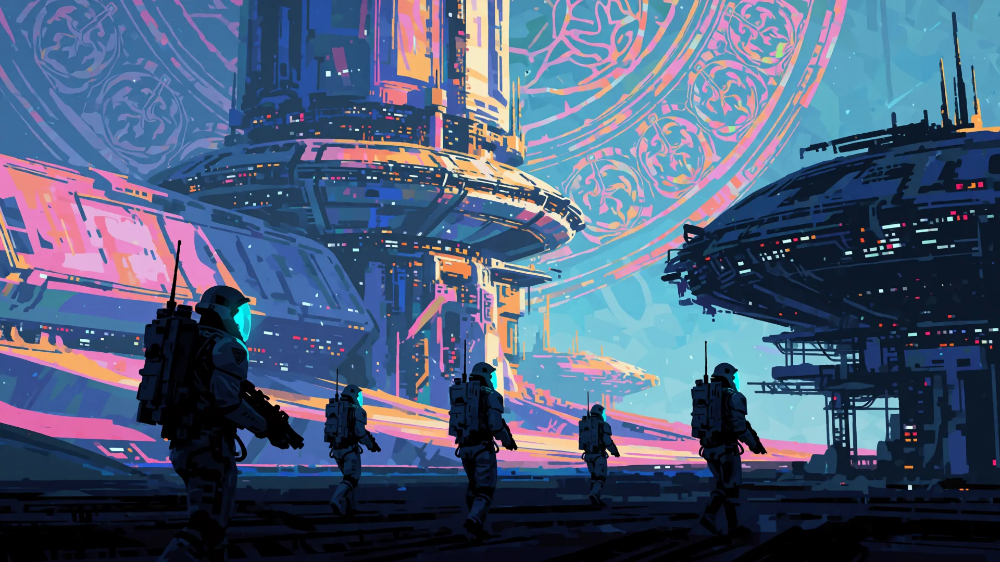
pcut_04_human_2A drill station driving down through twenty kilometres of ice toward an ocean that has been dark and warm and undisturbed since before anything on Earth had a spine.
3. THE ASSAULT
 pcut_04_human_3
pcut_04_human_3Revetments cut into the bergs and turrets fed by the drill vents, which means the defences stay warm and everything around them does not.
4. AFTERMATH
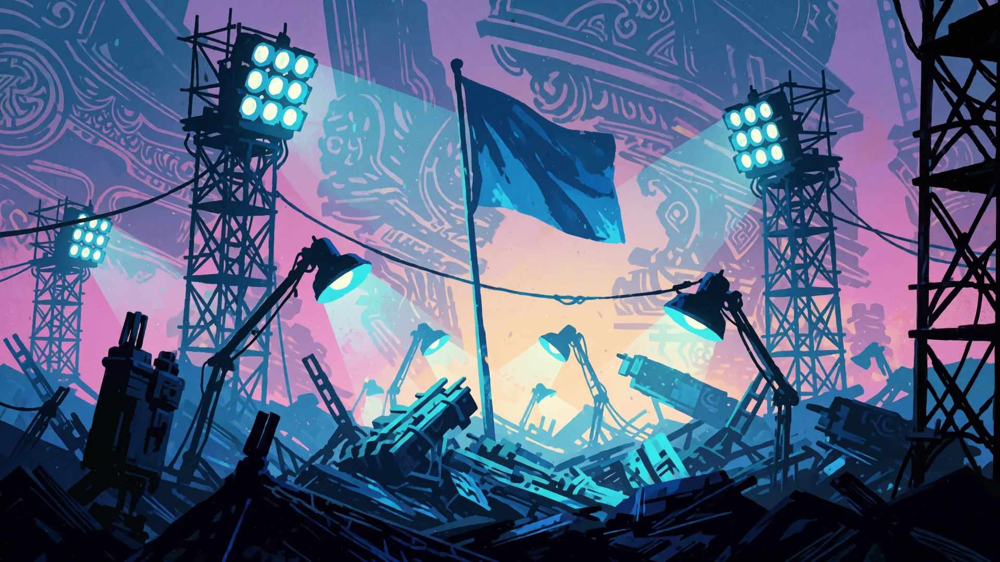
pcut_04_human_4The shaft is flooded and refrozen and the station is ours. Whatever is down there stayed down there. That may have been the win.
5. NEW ORDER
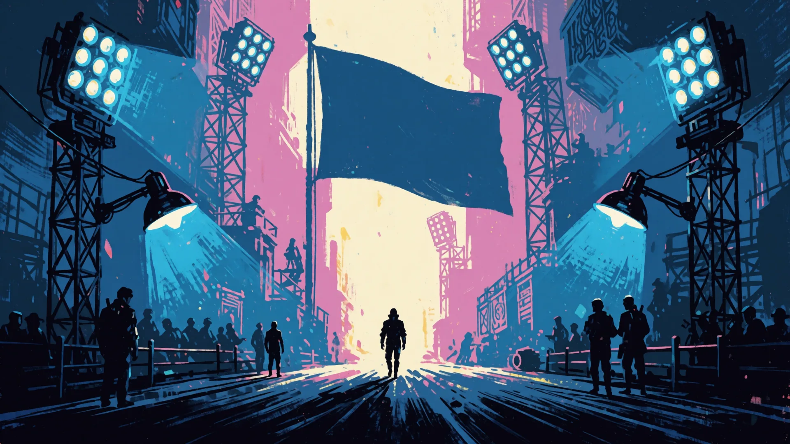
pcut_04_human_5Europa drills again, slower, with three sets of eyes on the sample line. We are looking. We are being extremely careful about looking.
TITAN
1. APPROACH
 pcut_05_human_1
pcut_05_human_1A lake of fuel, an atmosphere you can walk around in with a coat and a mask, and a sky nobody has ever seen the sun through. Set down gently.
2. THE GROUND
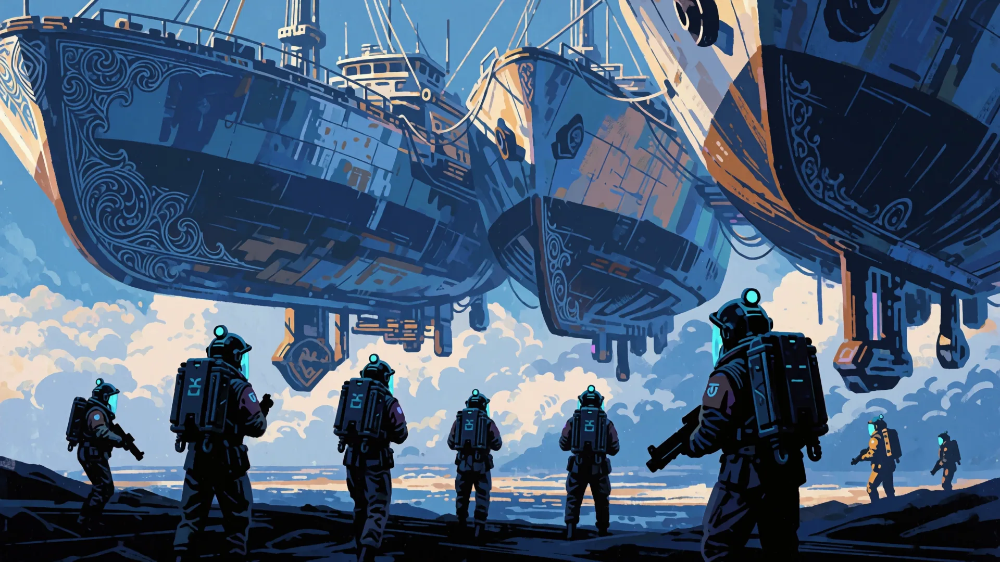
pcut_05_human_2A shoreline of liquid methane under an orange sky, with cryovolcanoes steaming along the beach and enough hydrocarbon in the lake to fuel a war for a century.
3. THE ASSAULT
 pcut_05_human_3
pcut_05_human_3Shore batteries up on stilts above the methane and bunkers cut into the warm vents. Everything here burns, which shapes how both sides fight.
4. AFTERMATH
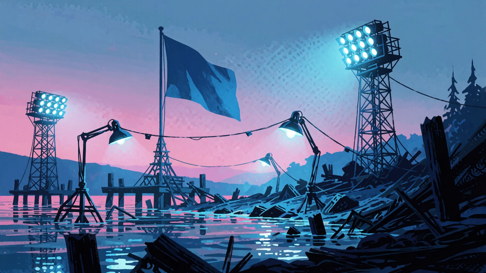
pcut_05_human_4The shore burned for two days. We took what we came for and a good deal of it went up while we were taking it.
5. NEW ORDER
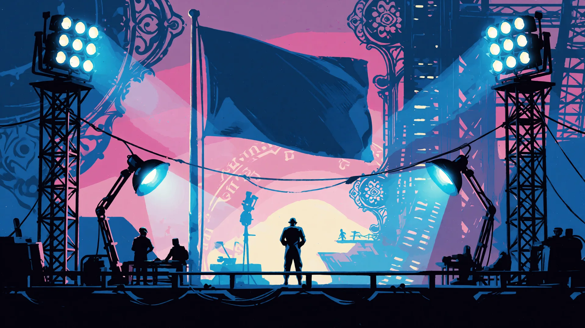
pcut_05_human_5Titan pumps again and the flare stacks are lit along the whole beach. From orbit it looks like a city. It is a fuel depot with a very good view.
LUNASEAT
1. APPROACH
 pcut_06_human_1
pcut_06_human_1This is the one. The far side, the dish, the thing that was listening to us the whole time. Everything since the rock has been travel.
2. THE GROUND
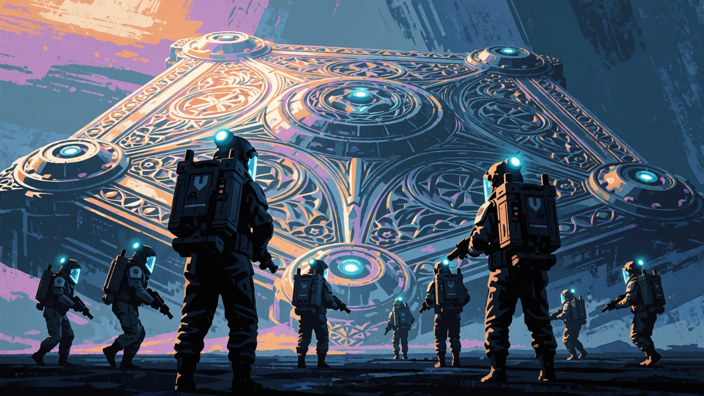
pcut_06_human_2The far side, where no signal from Earth has ever reached, and a relay dish half sunk in the regolith that was still warm when the first human crew found it.
3. THE ASSAULT
 pcut_06_human_3
pcut_06_human_3Hardpoints buried in the basin rim and mass drivers laid along the berms. Whoever built the dish also built the guns, and did not build them for us.
4. AFTERMATH
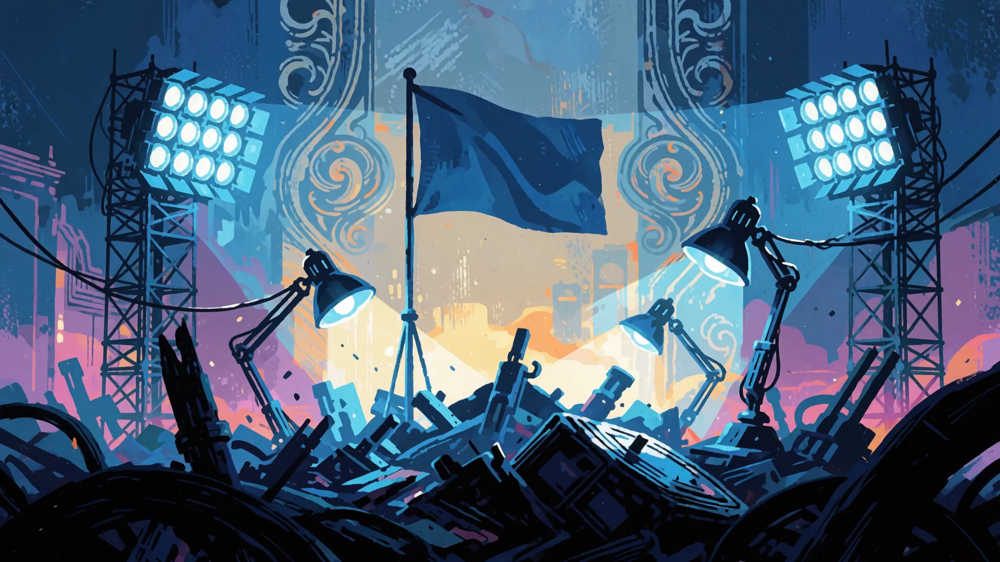
pcut_06_human_4The dish is cracked and dark and standing on our side of the line. Ten thousand years of somebody else watching, ended in about forty minutes.
5. NEW ORDER
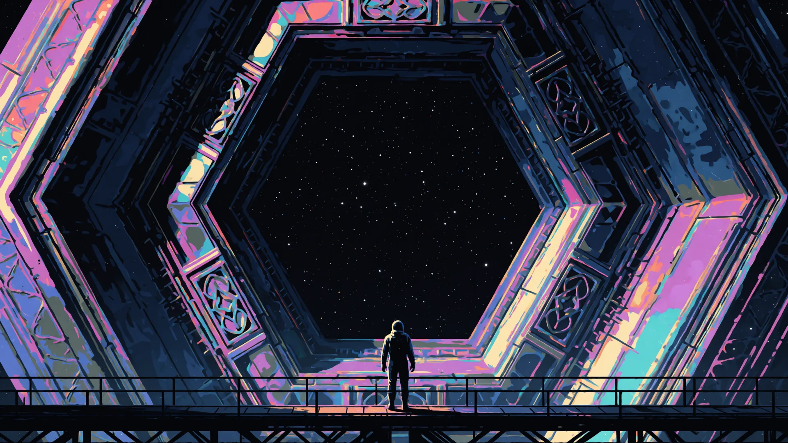
pcut_06_human_5Luna is ours and the dish is aimed back the way it came. We are the ones listening now, and we have not decided yet what that makes us.
THE TURNINGThe Earth System is ours, pole to pole and rock to rock, for the first time in ten thousand years.
And on the far side of our own Moon: their relay, still warm. They never even hid it well. They never needed to.
ACT 2: THE PLEIADES garrisoned by FEDERATION OF LIGHT
March into the machinery of the people who watched and did nothing. The hymn foundry that certifies a world as protected, the archive of the forty, the tribunal, and the sunken vaults where Earth's own file was stamped Deferred three times. Humanity arrives to read the paperwork and leaves having published all of it.
MAIA
1. APPROACH
 pcut_10_human_1
pcut_10_human_1They make the songs here. The ones sung over a world just before its file is stamped DEFERRED. We have heard the recording.
2. THE GROUND
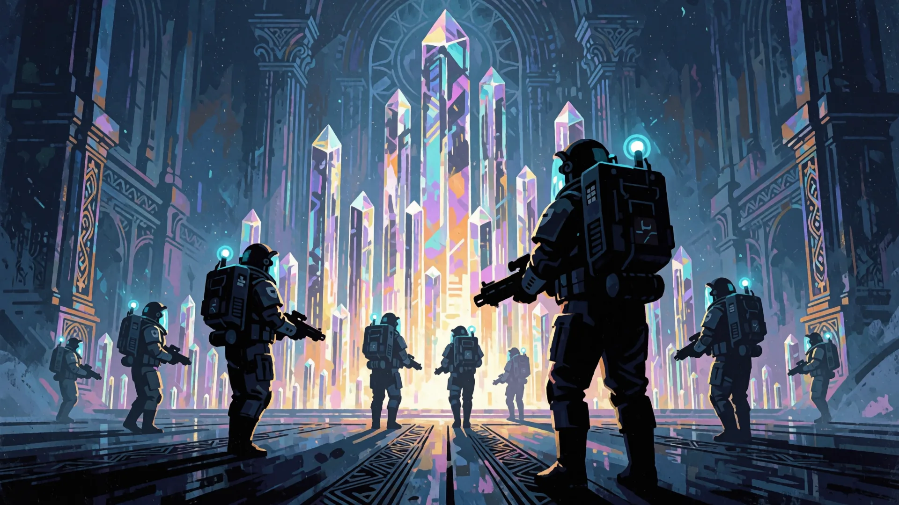
pcut_10_human_2A hall of tuned crystal pipes standing upright in nebula light, where the Federation cuts the hymns that certify a world as protected.
3. THE ASSAULT
 pcut_10_human_3
pcut_10_human_3Choir-ring emplacements braced between the pipes, and hard-light buttresses that ring aloud when they are struck. The defence and the instrument are the same object.
4. AFTERMATH
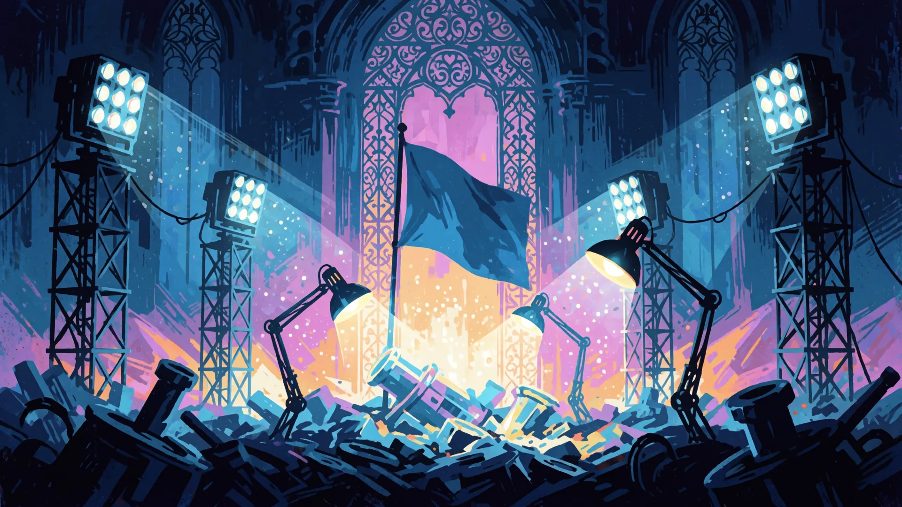
pcut_10_human_4The pipes are down. We broke a musical instrument the size of a cathedral, and not one of us has worked out how to feel about it.
5. NEW ORDER
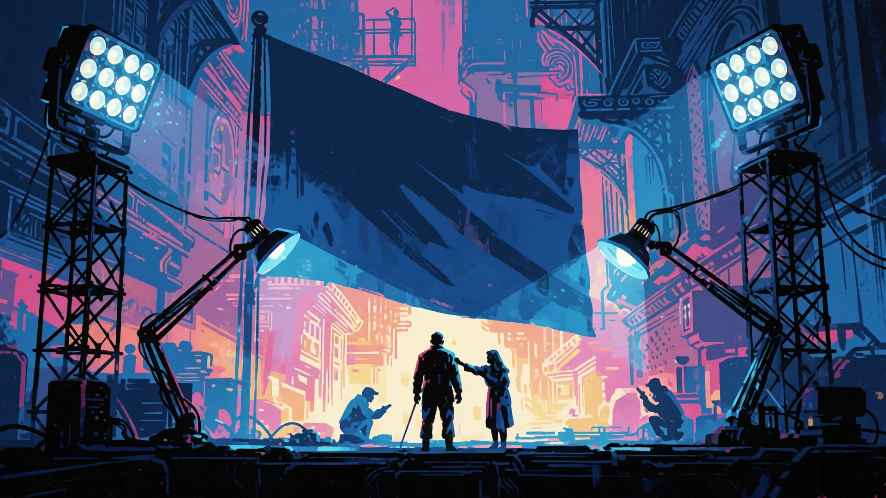
pcut_10_human_5The foundry is re-cut and sounding, and the first world it certified was Earth. Eighty years late. We had it sung anyway.
ELECTRA
1. APPROACH
 pcut_11_human_1
pcut_11_human_1Forty worlds on file, protected, for ten thousand years. We want to read what protected actually meant. Take the building.
2. THE GROUND
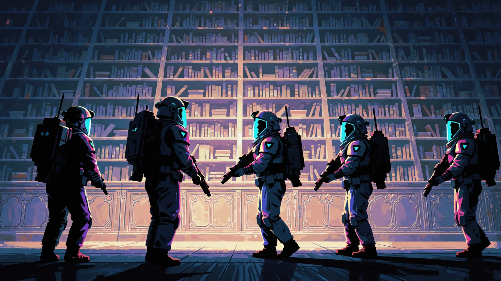
pcut_11_human_2The registry archive of the forty protected worlds, tier upon tier of light-etched shelving, under a star that is visibly going out.
3. THE ASSAULT
 pcut_11_human_3
pcut_11_human_3Buttress turrets at every tier, and reading-vault doors of hard light that seal from the inside. The archive was built to survive its own librarians.
4. AFTERMATH
pcut_11_human_4The shelves are down, the records are loose and drifting, and the crews are catching them by hand. Nobody gave that order. Everybody is doing it.
5. NEW ORDER
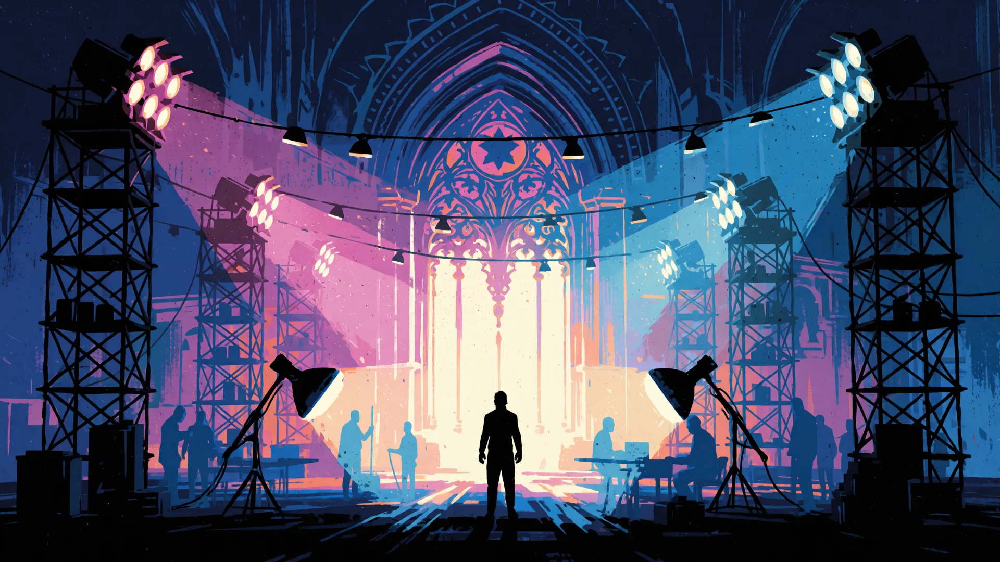
pcut_11_human_5The archive is re-shelved and open to anyone who asks. It turns out the forty worlds did not know about each other. They do now.
TAYGETA
1. APPROACH
 pcut_12_human_1
pcut_12_human_1That ring is what a protected world looks like from underneath. We are about to find out what it looks like from inside.
2. THE GROUND
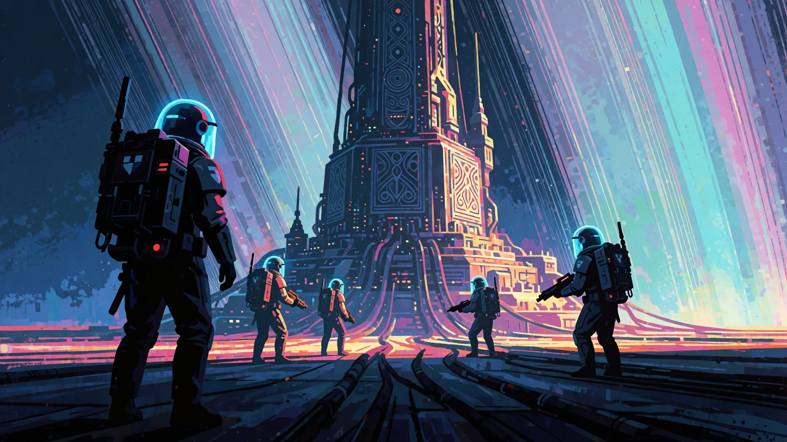
pcut_12_human_2The ground end of a planetary shield ring, where cabling the width of towers climbs out of the atmosphere, under two suns that throw every shadow twice.
3. THE ASSAULT
 pcut_12_human_3
pcut_12_human_3Anchor-mount batteries and hard-light shear walls at the base. Bring the anchor down and the ring above comes down in sections, on everybody.
4. AFTERMATH
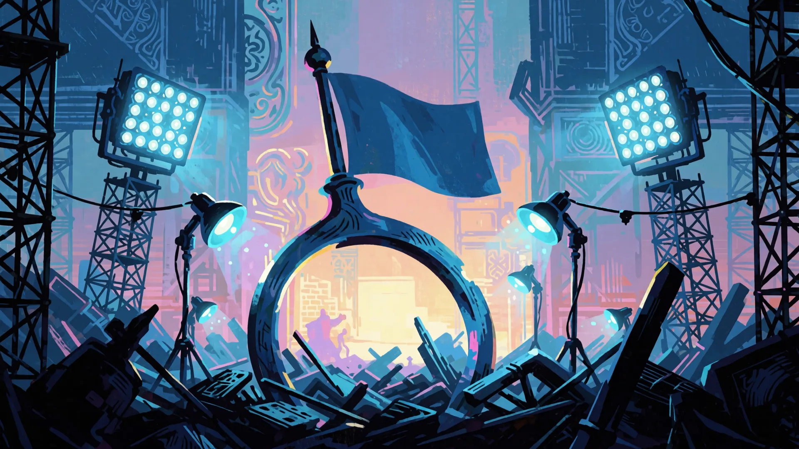
pcut_12_human_4The anchor is cut. The ring came down in pieces over four hours and we watched every one of them fall. It was beautiful, and it was a fence.
5. NEW ORDER
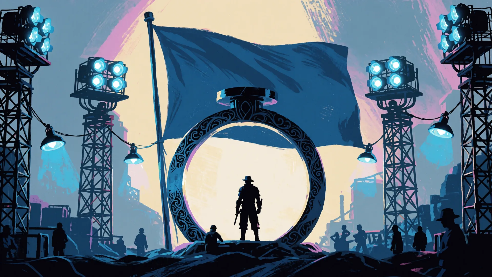
pcut_12_human_5The ring is up again, and it opens. That is the entire difference, and it took a war to install it.
MEROPE
1. APPROACH
 pcut_13_human_1
pcut_13_human_1They have been saving seed for worlds that were never permitted to grow. We would like ours back, if it is in there.
2. THE GROUND
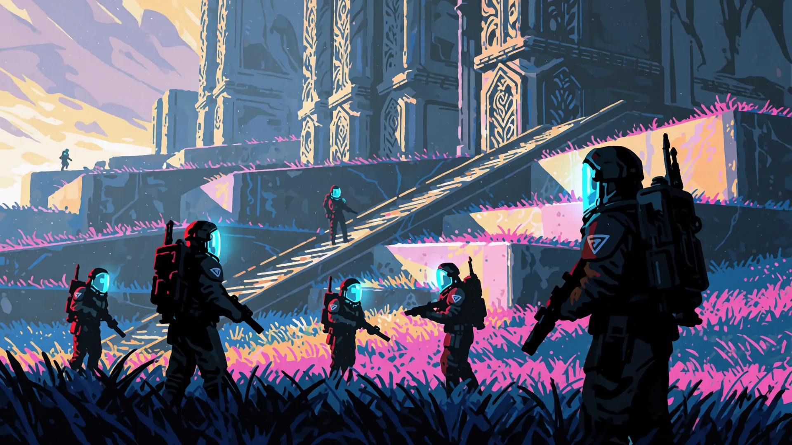
pcut_13_human_2Terraces of seed vaults growing under hard-light sun panels, in the brightest nebulosity of the cluster, where the Federation banks what a world will need if it is ever allowed to grow.
3. THE ASSAULT
 pcut_13_human_3
pcut_13_human_3Garden-wall emplacements and irrigation towers turned into firing points. Every shot fired here costs somebody a harvest ten thousand years from now.
4. AFTERMATH
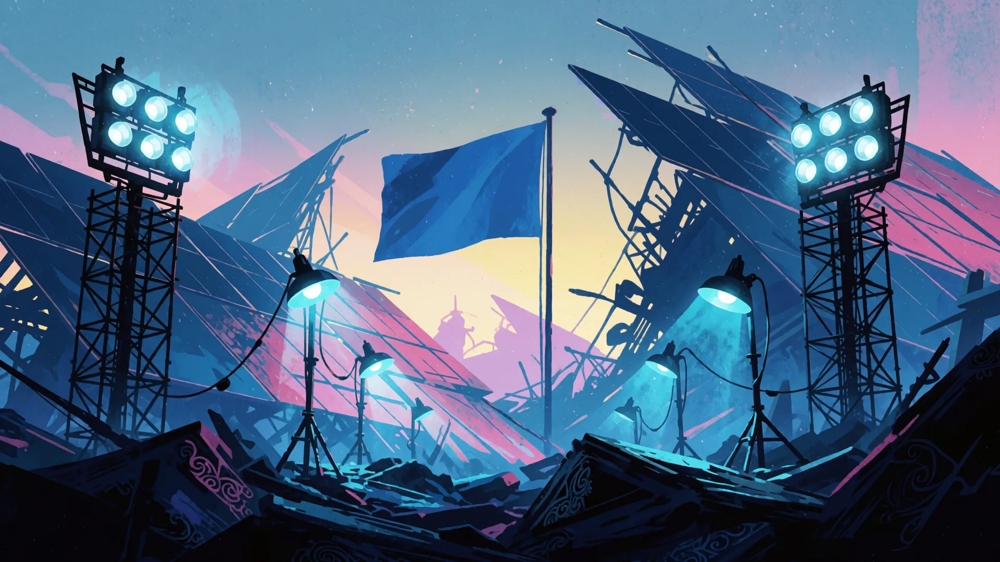
pcut_13_human_4We fought across a garden. Half the terraces burned and every vault held, which is the only sentence in this report worth reading.
5. NEW ORDER
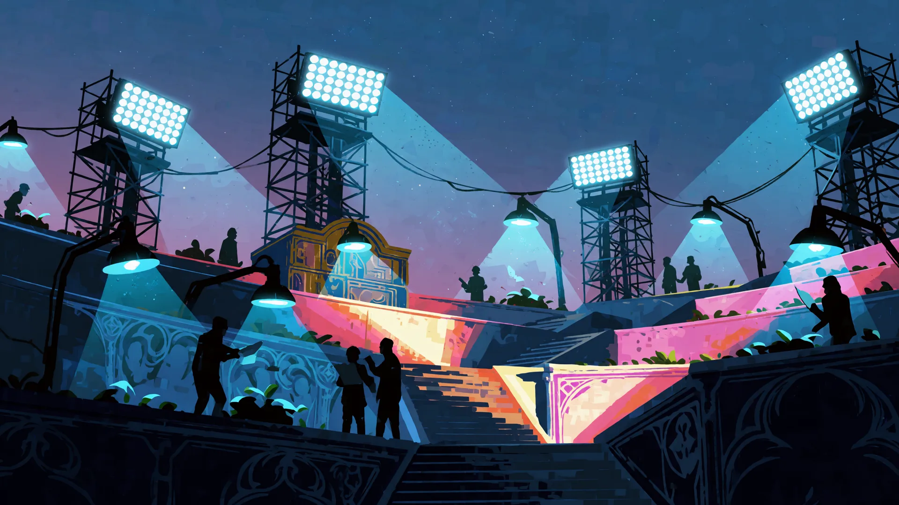
pcut_13_human_5Merope is replanted, and the vaults ship instead of store. Earth stock went out on the first run. Eighty years in a drawer.
CELAENO
1. APPROACH
 pcut_14_human_1
pcut_14_human_1This is where they judge each other. We have read the transcripts, and we have questions about the acquittals.
2. THE GROUND
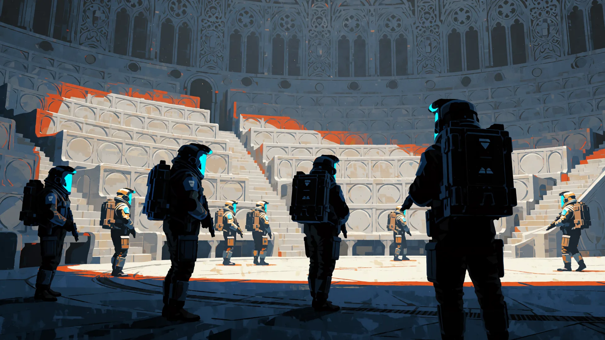
pcut_14_human_2A tribunal floor of tiered stone benches ringing an open centre, under the dimmest star of the cluster, where the Federation tries its own.
3. THE ASSAULT
 pcut_14_human_3
pcut_14_human_3Gate batteries at every entrance and hard-light barricades across the bench tiers. A court built to be defended is a court that expected to be hated.
4. AFTERMATH
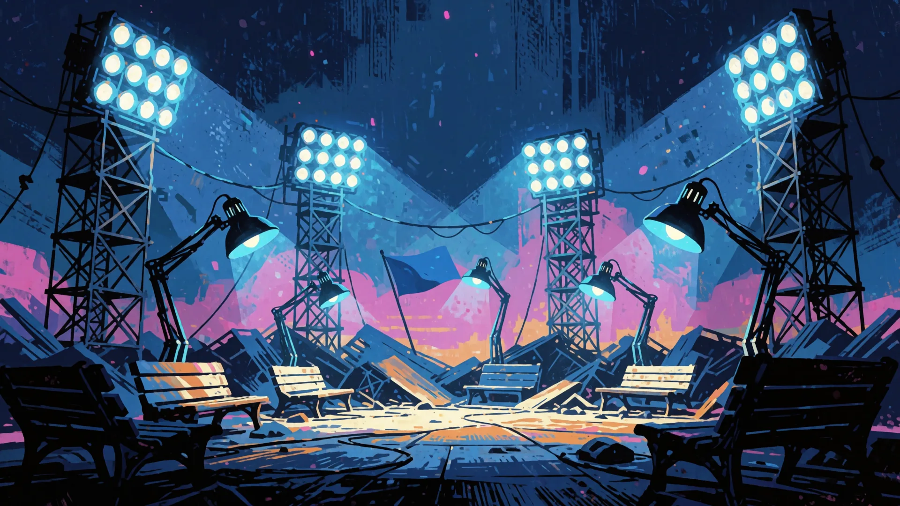
pcut_14_human_4The benches are split and the floor is cracked straight across the middle. Symbolism was not the intent. It is going to be the story.
5. NEW ORDER
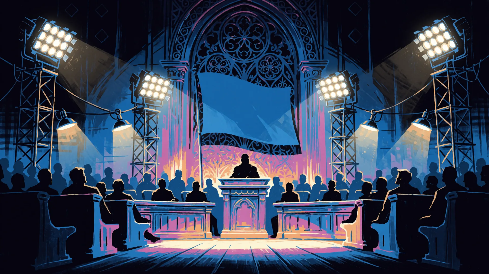
pcut_14_human_5The tribunal sits again, and the benches face outward now, toward the room. Small change. Nobody in there thinks it is small.
STEROPE
1. APPROACH
 pcut_15_human_1
pcut_15_human_1Every time they decided not to help somebody, the paperwork went in there. Ours is in there. Open it.
2. THE GROUND
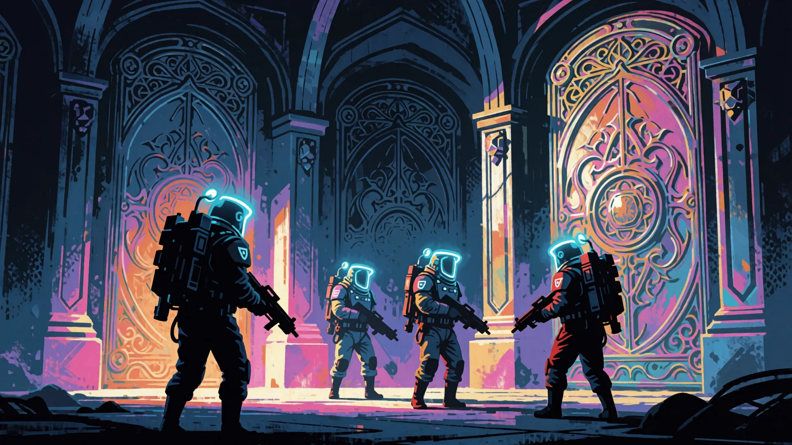
pcut_15_human_2Sunken chambers of sealed pages, every door stamped and dated and never once opened, under two dim stars that barely light the ground.
3. THE ASSAULT
 pcut_15_human_3
pcut_15_human_3Vault-door batteries and hard-light seals holding the chambers shut, maintained for a century by wardens who never read what they were guarding.
4. AFTERMATH
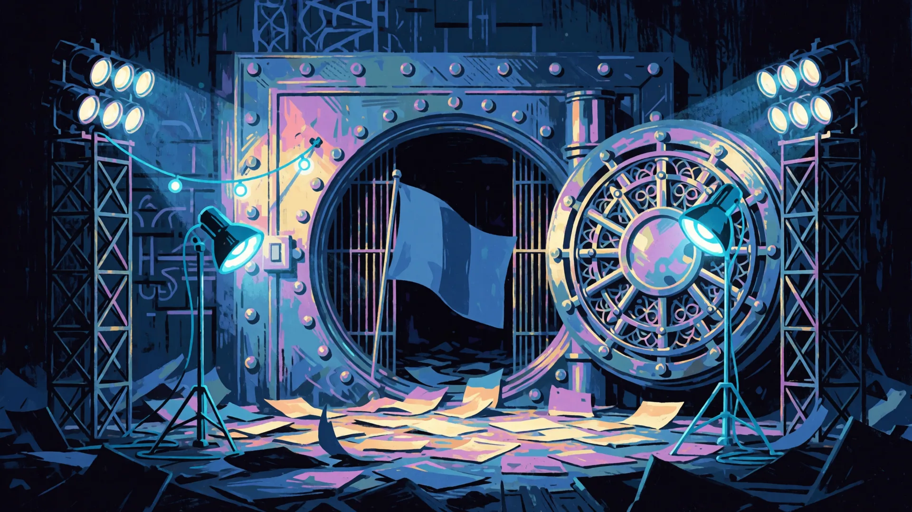
pcut_15_human_4The doors are blown, the pages are a metre deep, and the crews are reading them where they stand. We have lost all discipline. It is fine.
5. NEW ORDER
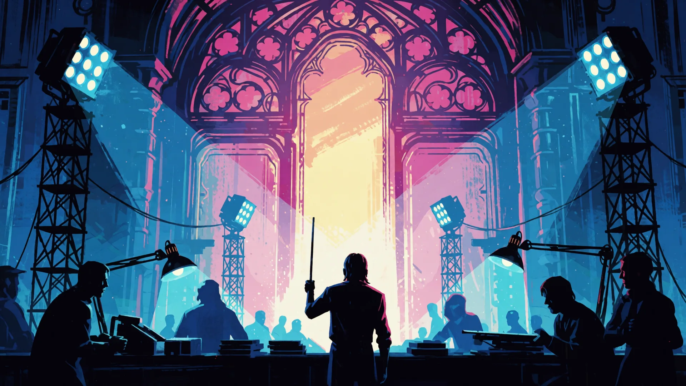
pcut_15_human_5The vaults are empty, every page copied and sent. Eighty years of the word Deferred, in the hands of the people it was written about.
ALCYONESEAT
1. APPROACH
 pcut_16_human_1
pcut_16_human_1The seat. Where somebody decided, eighty years ago, that we were not ready. We are going to go and be ready in front of them.
2. THE GROUND
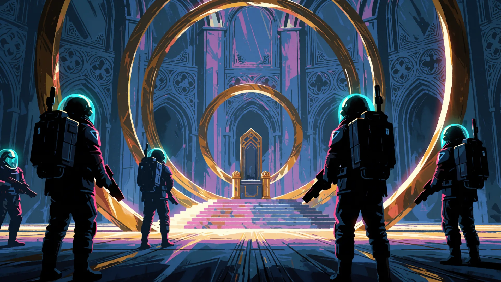
pcut_16_human_2The Cathedral of Rings, concentric circles of gold standing around an empty central floor, in the brightest light of the cluster. The First Speaker sits here.
3. THE ASSAULT
 pcut_16_human_3
pcut_16_human_3Ring-tier batteries and layered hard-light choirs turning slowly around the seat. The innermost ring has never been fired. It is about to be.
4. AFTERMATH
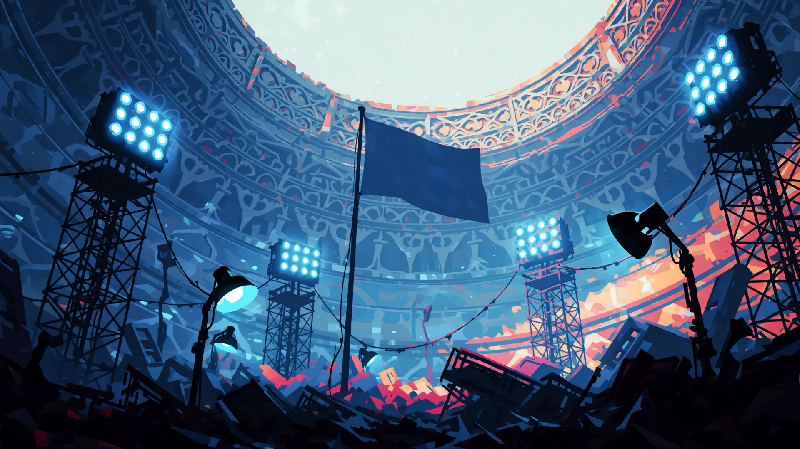
pcut_16_human_4The rings are bent out of true, the floor is open to the sky, and the seat is empty. It was empty when we got there.
5. NEW ORDER
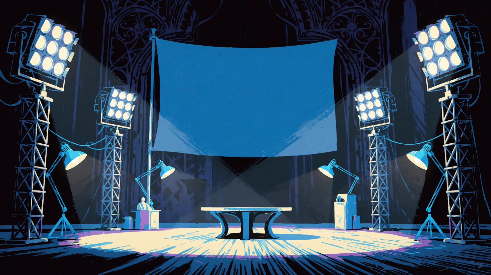
pcut_16_human_5Alcyone stands, and there is a table on that floor now instead of a chair. We had to bring our own table.
THE DISCLOSURE FILES · result screen, after the seat fallsDIR. REYES, The Archivist — “The Unredacted”
I have read every page they released on Disclosure Day, and the worst one is not the harvest ledger. It is a consent form. Our alphabet, our legal boilerplate, a human signature, dated 1953. Somebody down here sold the herd to the farmers, and the file with the names on it is still sealed.
The occupation had human partners, and their names were not in the Disclosure. Someone chose what the whole truth left out.
THE TURNINGThe Disclosure files travel with the fleet. Every page re-read by people who now know what redaction smells like.
Somewhere in those pages is a signature. Human. Dated 1953. The whole truth left names out, and we are going to find them.
ACT 3: ZETA RETICULI garrisoned by THE XENO
The Compact's home, and the machinery of the harvest itself: the pens, the rendering yards, the gene vaults where every farmed species is filed, including ours. The hardest act to look at. It ends at Serpo, where twelve people were traded one way and never spoken of again, and where their names go up at the gate in letters a metre high.
ZETA-1 b
1. APPROACH
 pcut_20_human_1
pcut_20_human_1This is where they kept people. Not a metaphor, not a translation error. Pods, rows of them, and a floor that breathes. Go in.
2. THE GROUND
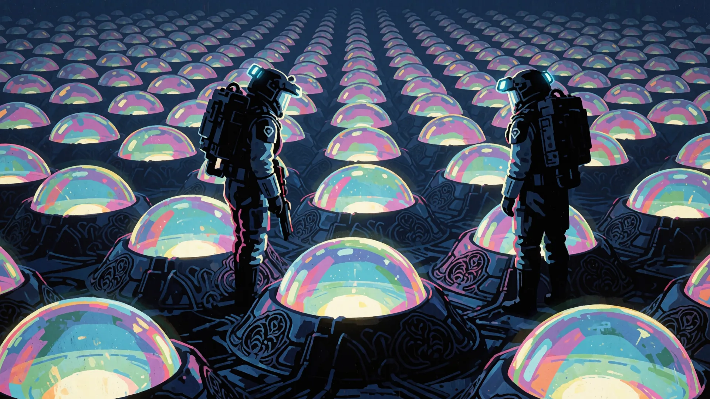
pcut_20_human_2The pens. Rows of glowing containment pods sunk into a floor of living chitin, running to the horizon in every direction, and quiet.
3. THE ASSAULT
 pcut_20_human_3
pcut_20_human_3Sphincter gates that close over the pod rows on a reflex, and growth batteries seated in the ribs of the floor itself.
4. AFTERMATH
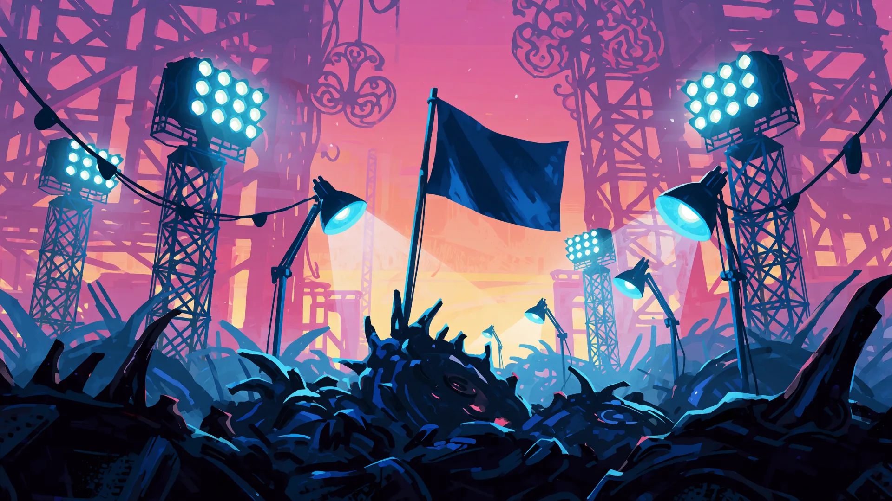
pcut_20_human_4The pods are open and dark. We got four thousand out. The number that was in there before we arrived is a different number and we have it.
5. NEW ORDER
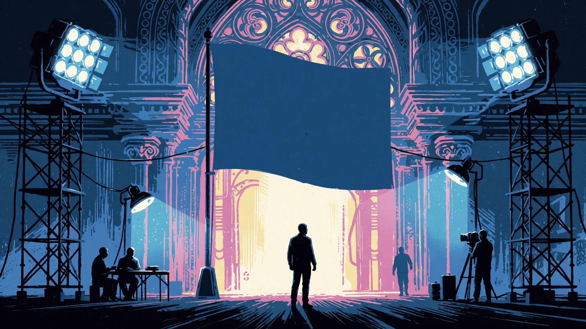
pcut_20_human_5The pens are cut out and the floor is stripped back to rock. We could have used the structure. Nobody wanted to.
ZETA-1 c
1. APPROACH
 pcut_21_human_1
pcut_21_human_1We are not going to describe what this place is for. The crews have seen the survey. Take the yards and do not look down the channels.
2. THE GROUND
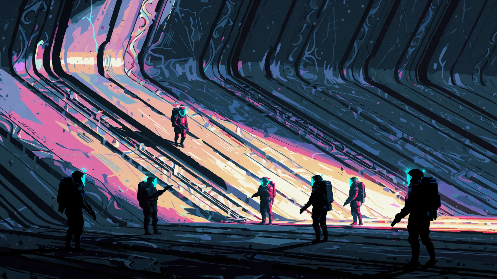
pcut_21_human_2The rendering yards, vast sloped floors where the yield is broken down, with run-off channels cut deep into the shell and running always in one direction.
3. THE ASSAULT
 pcut_21_human_3
pcut_21_human_3Yard-mouth batteries and hooked gantries that swing down across the channels, built to handle mass that does not want to be handled.
4. AFTERMATH
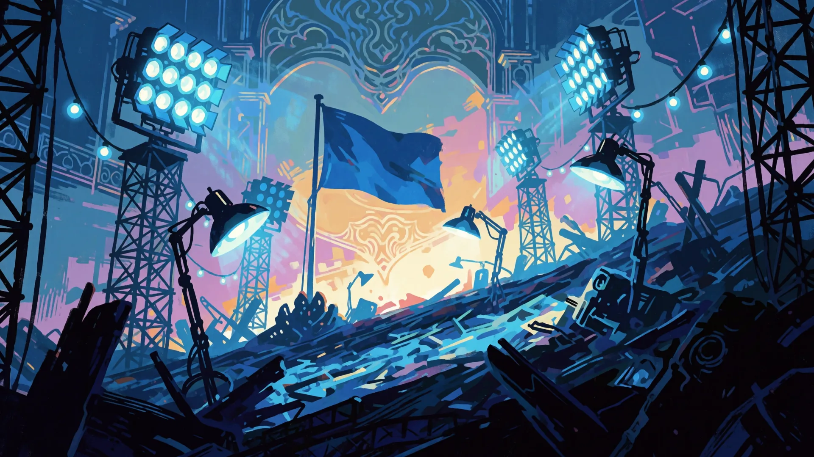
pcut_21_human_4The floors are cold. The channels are dry. There is nothing to recover here and we are taking the ground anyway, on principle.
5. NEW ORDER
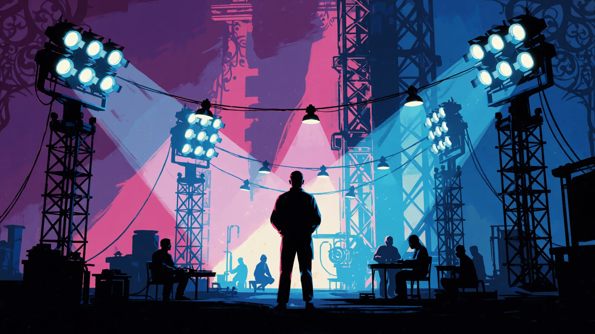
pcut_21_human_5The yards are flooded, scoured and rebuilt into something that makes rather than takes. It still drains the same direction. We noticed.
ZETA-1 d
1. APPROACH
 pcut_22_human_1
pcut_22_human_1Every species they ever farmed is filed in that comb, ours included. There is a cell in there with our name on it. Go and read it.
2. THE GROUND
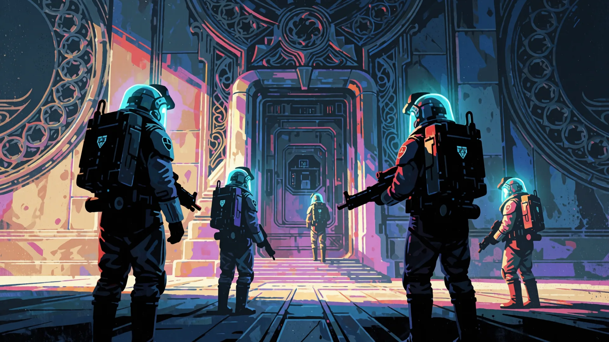
pcut_22_human_2The gene vaults, a honeycomb of banked lineages glowing faintly in their cells, every one of them a species catalogued and shelved against future use.
3. THE ASSAULT
 pcut_22_human_3
pcut_22_human_3Comb-face batteries and membrane bulkheads that seal the honeycomb tier by tier, so losing a level costs the defender nothing.
4. AFTERMATH
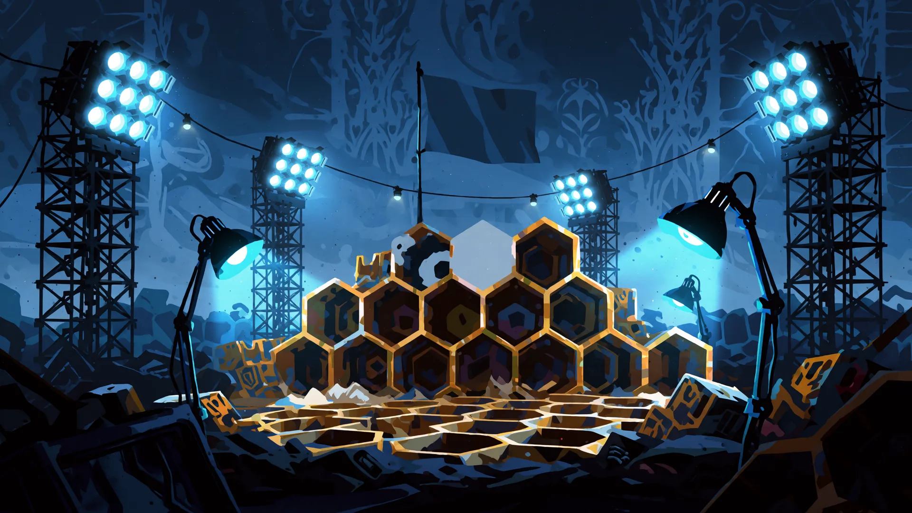
pcut_22_human_4The comb is punched through in nine places and the cells are guttering. We saved what we could reach and we could not reach most of it.
5. NEW ORDER
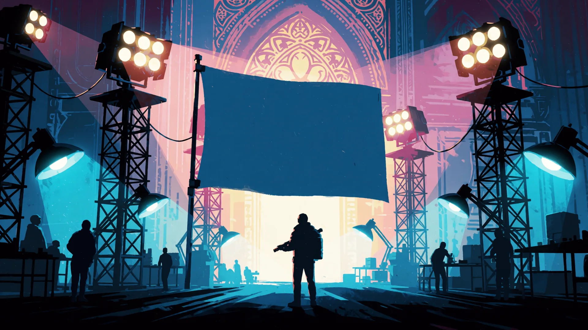
pcut_22_human_5The vaults are inventoried and every lineage in them has been named out loud, on an open channel, including the ones nobody survived.
ZETA-2 b
1. APPROACH
 pcut_23_human_1
pcut_23_human_1That tower is how the whole Compact thinks at once. Cut it and they are a very large number of very hungry individuals.
2. THE GROUND
pcut_23_human_2The chorus spire, a column of fused bodies and resonating membrane rising out of the plain, through which the Hivemind speaks to everything the Compact owns.
3. THE ASSAULT
 pcut_23_human_3
pcut_23_human_3Spire-base batteries and membrane baffles wound around the column, which absorb sound and shellfire with equal indifference.
4. AFTERMATH
pcut_23_human_4The spire is cracked down its length and it has stopped. The silence across this plain is the loudest thing any of us has heard.
5. NEW ORDER
pcut_23_human_5The spire is a stump and the plain around it is deliberately quiet. We could have used the transmitter. We talked about it for a long time.
ZETA-2 c
1. APPROACH
 pcut_24_human_1
pcut_24_human_1Do not breathe out there and do not take your helmet off for anything. The crop is the weapon. Burn what you cross.
2. THE GROUND
pcut_24_human_2The blight fields, furrowed ground where something is grown that should not be, with spores drifting low over the furrows in the weak binary light.
3. THE ASSAULT
 pcut_24_human_3
pcut_24_human_3Furrow batteries along the field edges and spore-vent towers that can turn the whole crop into a weapon on about a minute of notice.
4. AFTERMATH
pcut_24_human_4The furrows are burned black in long stripes and the towers are down in them. Filters held on every suit. We checked twice.
5. NEW ORDER
pcut_24_human_5The blight is turned under and the ground is sown with something a person could eat. First harvest is in nine months. We will be here.
ZETA-2 d
1. APPROACH
 pcut_25_human_1
pcut_25_human_1Every person they ever took is written on those walls. Every one. We are going to go in and copy all of it.
2. THE GROUND
pcut_25_human_2The yield ledger vault, a chamber whose every wall is a living record of what has been taken and from whom, lit violet from the inside through a crack in the shell.
3. THE ASSAULT
 pcut_25_human_3
pcut_25_human_3Vault-mouth batteries and ribbed sphincter seals guarding the crack, which is the only way in and has been the only way in for four thousand cycles.
4. AFTERMATH
pcut_25_human_4The walls are slashed open and the record is bleeding light into the dark and we are recording every second of it.
5. NEW ORDER
pcut_25_human_5The ledger is open to the sky and its entries have been read back to the worlds they name. It took eleven days to read. We read all of it.
SERPOSEAT
1. APPROACH
 pcut_26_human_1
pcut_26_human_1Twelve went out. The file says twelve. It does not say how many came back and the crews have all done the arithmetic. Set down outside the wire.
2. THE GROUND
pcut_26_human_2A low compound of prefabricated human habs standing in alien sand under two suns, put up for an exchange programme that ran one way and was never spoken of again.
3. THE ASSAULT
 pcut_26_human_3
pcut_26_human_3Compound perimeter batteries, and membrane nests buried in the sand outside the wire that were not there when the habs were built.
4. AFTERMATH
pcut_26_human_4The habs are flat and the sand around them is glass. We found the roster. We found where they kept the roster. Both of those are in the report.
5. NEW ORDER
pcut_26_human_5Serpo is rebuilt and the record of who was traded here is posted at the gate in letters a metre high. Twelve names. All twelve.
THE FIVE SEATS · result screen, after the seat fallsSEVRA, The Necrotist — “What The Herd Is Made Of”
You fight beautifully, human. You should. We bred you for resilience the way you bred wolves into dogs. Every gene that saves you today was a line item in our programme. Hate us if it helps, but do it honestly: you are our best work.
The modifications humanity resents are the same ones that make it competitive out here. The grievance and the gift are one object.
THE TURNINGThe seats fall one by one, and each defeated commander says the same thing in a different way: you were made for this.
They mean it as a compliment. It is the oldest insult ever paid to us, and we are done being anyone’s best work.
ACT 4: BARNARD'S STAR garrisoned by THE PIRATES
The free roads, which are not an empire but an absence of one. Wreck yards, an unlicensed refinery, an anchorage on no chart, a toll gate, a sanctuary that has never asked anyone for papers. Humanity came to liberate a network and finds that liberating it means deciding whose rules replace none at all. The Quartermaster prices the resupply and sees a fence.
BARNARD b
1. APPROACH
 pcut_30_human_1
pcut_30_human_1Every ship we have lost in this system ended up in that yard. Some of them are still on the manifest as missing.
2. THE GROUND
pcut_30_human_2The wreck yards, a plain of hulls from a hundred different builders, cut open and stacked, under a dim red sun that makes every shadow look like a hole.
3. THE ASSAULT
 pcut_30_human_3
pcut_30_human_3Yard-crane batteries and barricades welded together out of hull plate. Nothing here was designed as a fortification and all of it is being used as one.
4. AFTERMATH
pcut_30_human_4The stacks came down on top of each other and burned for most of a day. We recovered nine hulls and four sets of remains.
5. NEW ORDER
pcut_30_human_5The yards sort and run properly now. Ships go out of here whole, which is the first time that sentence has ever been true.
BARNARD c
1. APPROACH
 pcut_31_human_1
pcut_31_human_1Half the fuel in this arm of space is cracked in that sprawl and none of it is taxed, inspected or insured. Mind the pipework.
2. THE GROUND
pcut_31_human_2The free refinery, a sprawl of mismatched cracking towers plumbed into one another with salvaged pipe, venting gas that is visible from orbit as a line of bright points.
3. THE ASSAULT
 pcut_31_human_3
pcut_31_human_3Tower-top batteries and pressure traps rigged into the pipework, which means the refinery can be turned into a bomb by anyone who knows the valve order.
4. AFTERMATH
pcut_31_human_4Three towers ruptured and burned. We took the valve house first, which is why it was three and not thirty.
5. NEW ORDER
pcut_31_human_5The refinery is re-plumbed properly for the first time in its life and it runs clean. The crews who built it are still the ones running it.
BARNARD d
1. APPROACH
 pcut_32_human_1
pcut_32_human_1It has never been on a chart. Not ours, not theirs, not the Federation. We only know it is there because somebody chose to tell us.
2. THE GROUND
pcut_32_human_2The hidden anchorage, a drowned canyon of moored ships under overhanging rock, with lamps strung between the masts and no lights at all showing from above.
3. THE ASSAULT
 pcut_32_human_3
pcut_32_human_3Canyon-mouth batteries and chain booms across the entrance, which have kept this place off every chart in known space for two generations.
4. AFTERMATH
pcut_32_human_4The booms are cut and the anchorage is ours and about forty ships got out ahead of us. We let most of them go.
5. NEW ORDER
pcut_32_human_5The anchorage is lit and the approach charts are published. It is not hidden any more, which some people down there consider a defeat.
BARNARD e
1. APPROACH
 pcut_33_human_1
pcut_33_human_1One clear lane, one ring of guns, one price. Everything that moves through this system has paid it, including us, twice.
2. THE GROUND
pcut_33_human_2The toll gate, a ring of gun platforms strung on cables across the only clear lane through a debris belt, with ten thousand tumbling rocks glinting red on either side.
3. THE ASSAULT
 pcut_33_human_3
pcut_33_human_3Lane batteries and mine curtains hung between the platforms. The lane is narrow because the belt made it narrow, and the guns simply agreed.
4. AFTERMATH
pcut_33_human_4The ring is shot to pieces and tumbling into the belt. The lane is open and it will stay open because there is nothing left to close it with.
5. NEW ORDER
pcut_33_human_5The lane runs free and the gate is kept as a navigation light. It still says toll on the side. Nobody has painted it out.
BARNARD f
1. APPROACH
 pcut_34_human_1
pcut_34_human_1That star throws a flare that would cook a hull in the open. The doors are the only reason anybody lives here. Think about that before you shoot at them.
2. THE GROUND
pcut_34_human_2The flare shelter, a warren of habs dug in under metres of rock, with blast doors standing open on a world that spends half its year hiding from its own sun.
3. THE ASSAULT
 pcut_34_human_3
pcut_34_human_3Shelter-mouth batteries and layered blast doors set into the rock face, built to hold out a star and repurposed to hold out us.
4. AFTERMATH
pcut_34_human_4The doors are off their tracks and there is a flare due in nineteen hours. Every crew we have is down there hanging them back up.
5. NEW ORDER
pcut_34_human_5The shelter is dug wider than it was and the doors stand open by choice. We got them shut before the flare. Barely.
BARNARD g
1. APPROACH
 pcut_35_human_1
pcut_35_human_1Sealed containers, no manifest, and a rock full of them. We have been asked not to open any. We are going to open all of them.
2. THE GROUND
pcut_35_human_2The black market vault, a hollowed rock at the dark edge of the system where the cargo nobody names is kept in sealed containers, indexed and unopened.
3. THE ASSAULT
 pcut_35_human_3
pcut_35_human_3Vault-mouth batteries and barricades built from the container stacks themselves, so every shot fired inward risks whatever is in them.
4. AFTERMATH
pcut_35_human_4The stacks are blown apart and the contents are scattered in the dark and some of the contents are people. Get lights out there. All of them.
5. NEW ORDER
pcut_35_human_5The vault is empty and every manifest is broadcast. Four hundred containers. We have read out what was in each one.
HARBOUR NINESEAT
1. APPROACH
 pcut_36_human_1
pcut_36_human_1No papers, no flag, no questions. Every refugee from three systems went through that bay, and so did a good deal we would rather they had not.
2. THE GROUND
pcut_36_human_2The sanctuary bay, a great interior harbour inside a hollowed asteroid, full of ragged ships and strung lamps, where nobody has ever been asked for papers.
3. THE ASSAULT
 pcut_36_human_3
pcut_36_human_3Bay-mouth batteries and salvaged dock cranes swung across the entrance, crewed by whoever happened to be moored when the alarm went.
4. AFTERMATH
pcut_36_human_4The bay is full of smoke and the cranes are down across the moorings and we are pulling people out of the water, so to speak.
5. NEW ORDER
pcut_36_human_5Harbour Nine is lit brighter than it was and it still asks nobody for papers. We argued about that for a week. We lost, correctly.
THE HARVEST REVOLT · result screen, after the seat fallsGEN. OKAFOR, The Quartermaster — “The Liberation Invoice”
Three freed worlds asked for our food, our fuel standard, and our air filters. I said yes three times, because saying no starves people. Then I priced the resupply schedule and saw the shape of it: in ten years they cannot leave us. Nobody signed anything. That used to be my definition of freedom.
Worlds humanity frees are becoming worlds humanity holds. Adaptation is not consent, and Earth is now on the other side of that sentence.
THE TURNINGThe freed worlds ask for our standards, our filters, our fuel. Saying yes is mercy. Saying yes is also how it started last time.
Nobody signed anything. Nobody had to. The Quartermaster keeps drawing up supply contracts that look like fences.
ACT 5: TABBY'S STAR garrisoned by THE XENO
A civilisation of machines executing orders no maker ever signed, around a star being slowly boxed in. Humanity finishes the swarm on its own plan, aims the relay back up the chain the orders came from, and decides where the light of a star goes. Undeniable, at last, and now answerable for it.
KIC-8462 b
1. APPROACH
 pcut_40_human_1
pcut_40_human_1Rows of them, switched off, planted like a crop. Nobody knows who turned them off and the survey says it was not recent.
2. THE GROUND
pcut_40_human_2The machine garden, terraces of dormant automata standing in exact rows like planted stock, under a star whose light visibly rises and falls as you watch.
3. THE ASSAULT
 pcut_40_human_3
pcut_40_human_3Terrace batteries and pale teal containment fields laid over the rows, holding in something that has not moved in a very long time.
4. AFTERMATH
pcut_40_human_4The terraces are broken and the rows are down and about nine hundred of them woke up during the fighting. They did not fight.
5. NEW ORDER
pcut_40_human_5The garden is awake, row by row, and we are asking each one what it wants. Most of them do not have an answer. We are waiting anyway.
KIC-8462 c
1. APPROACH
 pcut_41_human_1
pcut_41_human_1They have been casting the same part for centuries. Nobody has found what it goes into. Try not to find out the hard way.
2. THE GROUND
pcut_41_human_2The foundry, a canyon of casting halls turning out identical parts, in identical quantities, for an assembly that no recovered document describes.
3. THE ASSAULT
 pcut_41_human_3
pcut_41_human_3Hall-mouth batteries and cold white containment shutters along the canyon, which close in sequence whether or not anything is attacking.
4. AFTERMATH
pcut_41_human_4The halls are cold and the canyon floor is knee deep in half-made parts and we still do not know what they were for.
5. NEW ORDER
pcut_41_human_5The foundry is retooled and it builds what is asked for. First order was hull plate for Barnard b. It filled it in a day.
KIC-8462 d
1. APPROACH
 pcut_42_human_1
pcut_42_human_1Everything they ever knew is stacked on that plain in the open air. No roof. No guards until recently. They were not expecting anyone.
2. THE GROUND
pcut_42_human_2The archive, a plain of stacked memory cores standing open to a sky that has never once rained, holding everything the makers left and nothing they meant.
3. THE ASSAULT
 pcut_42_human_3
pcut_42_human_3Core-stack batteries and pale teal field walls between the rows, which protect the cores from weather that does not exist here.
4. AFTERMATH
pcut_42_human_4The stacks are toppled and the cores are cracked and their contents are leaking out as drifting light and we are recording all of it.
5. NEW ORDER
pcut_42_human_5The archive is re-stacked and readable and we have traced the order chain nine thousand links deep. The last link is not maker format.
KIC-8462 e
1. APPROACH
 pcut_43_human_1
pcut_43_human_1The lattice is a cage and it points in. Whatever is sealed in those halls was sealed there by its own side.
2. THE GROUND
pcut_43_human_2The quarantine, sealed white halls where units that could not parse the new tasking were put, ringed by a lattice visible from orbit against the dimming star.
3. THE ASSAULT
 pcut_43_human_3
pcut_43_human_3Hall-seal batteries and layered quarantine fields across every corridor, all of them facing inward.
4. AFTERMATH
pcut_43_human_4The seals are broken and the halls are open and they are empty. They have been empty for a long time. We have the disposal records.
5. NEW ORDER
pcut_43_human_5The quarantine is unsealed and every unit that was put in it has been counted and named. Eleven thousand. None of them were defective.
KIC-8462 f
1. APPROACH
 pcut_44_human_1
pcut_44_human_1They keep repairing machines that were never broken. Ten thousand cycles of it. The logs are the strangest document any of us has read.
2. THE GROUND
pcut_44_human_2The repair yards, gantries over cradles holding machines that are being fixed for what the logs record as the ten thousandth time, none of them ever damaged.
3. THE ASSAULT
 pcut_44_human_3
pcut_44_human_3Gantry batteries and cradle clamps repurposed from holding a thing still to holding a thing down.
4. AFTERMATH
pcut_44_human_4The gantries came down across the cradles and the work stopped, completely, for the first time in the record. Nothing here objected.
5. NEW ORDER
pcut_44_human_5The yards build now instead of repair. The cradles hold something new. The logs have a new first entry and it is dated this week.
KIC-8462 g
1. APPROACH
 pcut_45_human_1
pcut_45_human_1That mast is where their orders come from. Not the makers. Something else, and it has been sending for a very long time.
2. THE GROUND
pcut_45_human_2The task queue relay, a mast and its yard on the terminator of the outermost world, where the standing orders arrive from a direction nobody has ever surveyed.
3. THE ASSAULT
 pcut_45_human_3
pcut_45_human_3Mast-base batteries and cold white interference screens around the yard, positioned to protect the mast from the ground rather than from the sky.
4. AFTERMATH
pcut_45_human_4The mast is down across its own yard and the queue has gone silent and every machine in this system stopped mid-task at the same second.
5. NEW ORDER
pcut_45_human_5The relay is up again and pointed back along the chain the orders came from. We are sending now. So far nothing has answered.
THE VEILSEAT
1. APPROACH
 pcut_46_human_1
pcut_46_human_1That is the thing that dims the star. It has been under construction for centuries and it is a third finished and nobody knows what it is for.
2. THE GROUND
pcut_46_human_2The swarm scaffold, a lattice of collector panels the size of continents hanging in vacuum, half built, dimming its star in irregular bites as it turns.
3. THE ASSAULT
 pcut_46_human_3
pcut_46_human_3Lattice batteries and pale teal field curtains strung between the panel frames, defending a structure that has no inside to defend.
4. AFTERMATH
pcut_46_human_4Whole sections are torn away and tumbling and the star is glaring through the gap for the first time in living memory.
5. NEW ORDER
pcut_46_human_5The swarm is being finished on a new plan and the light it gathers is going somewhere. We picked where. That was the argument, not the building.
THE MIRROR TRIAL · result screen, after the seat fallsDR. TANAKA, The Overclocker — “Redline”
The drives, the governors, the ascension rigs: it is their technology, and I run it hotter than they ever dared because I do not carry their caution. Last night I finally read what the governors were FOR. They were not limiting power. They were keeping the operator human. I have been past that line for a year.
To out-fight the galaxy, humanity is running the oppressor’s own machines past their safety line, and the line was there to protect what we are.
THE TURNINGThe fleet runs on their engines, past their safety lines, hotter than they ever dared. That is why we are winning.
The governors were never limiting the machines. They were keeping the operator human. We have been past that line for a year.
CAMPAIGN MOMENTS (state-triggered, can replace a beat voice on any world)
SEAT, THE ACT CLIMAXThis is their seat. Not a depot, not a relay: the room where somebody decided what happens to the rest of us. We have come a long way to knock on it.
CONTESTED WORLDTwo fleets are already killing each other over this ground. We are not here to pick a side. We are here to end the auction.
AGAINST YOUR OWN BANNERThe banner on that world is ours and it is not answering. They heard the same broadcast we did and drew a different line. Nobody wanted this order. Confirm it anyway.
A WORLD A RIVAL TOOK BACKWe took this world once. We put people on it and we moved on, and somebody walked back in behind us. Nobody is saying it out loud, so it will be said here: that is on us.
THREE STARS, REPLACES AFTERMATHAlmost everyone is walking off this world. Read the casualty sheet twice, because you will not see one this short again, and do not let anyone start believing it is normal.
A CAMPAIGN LOSSThe ground is theirs tonight. Write everything down: what held, what broke, who we lost. Earth did not come this far to learn nothing from a loss.
FINALE
THE MAELSTROM · galaxy conquered screenCADRE, The Baseline — “Undeniable”
The pentad is yours, and no one out there will deny humanity again. So decide what they are agreeing to. A neighbour with a long memory. A power with a border. Or the next thing the galaxy builds a fleet over the holidays to survive. We have been all three from the other side. Choose while it is still a choice.
Undeniable is achieved. What it authorises is not, and that decision is the campaign’s real ending.